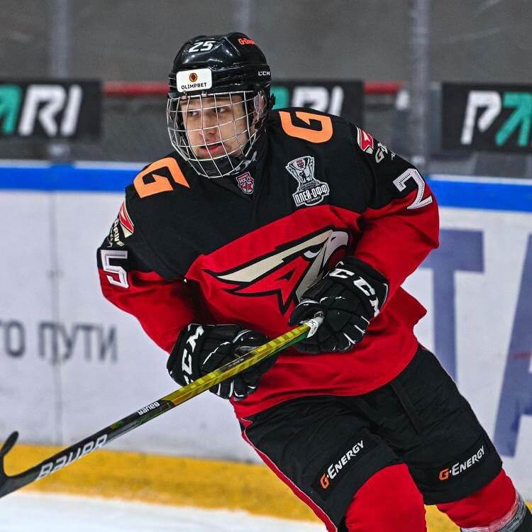

Мне всегда нравились различные виды спорта, но сегодня я расскажу о своей любви к боксу. Будучи еще студенткой, после просмотров боев по ММА я решила, что тоже так хочу. Но для начала я решила, что пойду на классические занятия по боксу, а уже после на смешанные единоборства. Родители были настроены негативно, но спустя некоторое время усердных занятий я начала показывать результаты, полюбила бокс, передумала идти на занятия по ММА и даже начала участвовать в соревнованиях. Вскоре я вышла замуж и забеременела. Занятия пришлось прекратить, да и муж особо не одобрял мою любовь к боксу. После рождения малышки, уже в декрете, я снова вернулась к любимому делу, и никто не стал препятствовать моему решению. Сейчас я вернулась в прежнюю форму и уже снова готовлюсь к соревнованиям. Желаю подписчикам никогда не сомневаться в своих силах, ведь это качество главное не только в спорте, но и в жизни.
Сюжеты и интервью
Что такое "Спорт" и его классификации
В вводном видео Вы узнаёте, что такое Спорт и какие классификации он имеет
турнир «Московская сабля»
В Москве состоялся турнир «Московская сабля». Соревнования прошли при поддержке Департамента спорта города Москвы в год 100-летия Московского спорта
Мотобол
В нашем сюжете мы расскажем как прошёл матч в рамках Чемпионата России Виднонского Металлурга и Краснодарского Агрокомплекса
Студенческий бокс
Открытый чемпионат среди мужчин, студенты из 6 университетов сразились между собой. У них было всего 9 минут, чтобы одержать победу. О результатах и соревнования в нашем сюжете.
Юрий Ноздрунов — бронзовый призёр Паралимпийских игр
Юрий Ноздрунов — бронзовый призёр Паралимпийских игр 2020 в Токио по настольному теннису. О детстве, карьере и своих увлечениях поделился в нашем интервью.
Международная «62-я Большая Московская регата»
4 июня на Гребном канале завершилась международная «62-я Большая Московская регата»
Кирилл Рассказовов, игрок ХК «Витязь»
Смотрите интервью с Кириллом Рассказовым, игрок ХК «Витязь» 22/23
В апреле Кирилл подписал однолетний контракт с ХК «Сочи» В нынешнем сезоне в активе 30-летнего хоккеиста 30 (15+15) очков в 68 играх регулярного чемпионата КХЛ при показателе полезности «+20».
Велосипедная колонна
Единая колонна на велосипедах вдоль главных достопримечательностей Подольска. Именно так подольчане отпраздновали День России-важнейший праздник нашей страны
интервью с игроком Сборной России и Московского Спартака
Ко дню Всемирного дня детского футбола, мы подготовили для Вас интервью с игроком Сборной России и Московского Спартака - Русланом Литвиновым. Руслан рассказал о своём детстве и юношестве, о футболе и других увлечениях. Скорее смотрите, получилось максимально душевное интервью
Алексей Ахтямов - мастер спорта международного класса
Сегодня у нас в гостях Алексей Ахтямов - мастер спорта международного класса, участник летних Паралимпийских игр в Лондоне по легкой атлетике О пути на вершину пьедестала, взлетах и падениях - в нашем новом интервью
Турнир Национальной студенческой футбольной лиги
Лидер команды «Спорт Медиа» побывала в командировке в Санкт-Петербурге, где состоялся 4 дневный турнир Высшего дивизиона Национальной студенческой футбольной лиги
Мероприятия
В РЭУ им.Плеханова Софья Масленко провела лекцию по теме «Здоровый образ жизни». Студенты закрепили свои знания на практике и узнали много нового, а физкультминутка подарила им заряд бодрости на целый день

Ранним утром мы собрали детей 1-6 классов на территории школы 13, провели зарядку и потянулись к солнышку. Зарядились на летний тёплый день.
9-го июня провели эстафету для детей, поиграли в подвижные игры, поговорили о спорте и здоровом образе жизни
О проекте
«Спорт Медиа» - спортивно-просветительский проект, главная цель которого приобщить молодёжь к здоровому образу жизни, а также сформировать у молодого поколения интерес к спорту, выдающимся личностям в этой сфере, развить волевые и выносливые качества.

Аида Тагиева
SMM-специалист, копирайтер

Софья Масленко
Автор проекта, корреспондент, продюсер съемок
Студенкта факультета журналиситки Участник проекта "Спецкор" Москва Призер конкурса "Мой первый бизнес" Специалист по делам с молодежью в муниципальном учрежденииАксиния Сакович
Монтажер, оператор
Спортивные истории
-
24 годаМосковская область, Подольск
-
 19 летТула
19 летТулаС детства люблю футбол. Хожу и смотрю футбол везде. Я занимаюсь футболом уже несколько лет и поиграл во многих командах. Я видел много талантливых ребят, которые сейчас играют в серьезных футбольных академиях России. С некоторыми я играл за одну команду. Из-за проблем со здоровьем я решил не идти в профессиональный спорт. На данный момент я также продолжаю заниматься футболом. Тренировки у нас практически каждый день. Мы играем с командой на разных турнирах в области и столице. Каждый раз я получаю невероятное удовольствие от игрового процесса и новых побед.
-
 26 летМосковская область, Подольск
26 летМосковская область, ПодольскС самого детства я занимаюсь футболом. Закончил школу футбола в 10 классе. Профессиональную карьеру построить не получилось, но я понимал, что не могу не заниматься любимым делом. Поэтому я ушел в любительский лигу. На данный момент моя команда находится на 2 строчке турнирной таблице. Два раза в неделю у нас тренировки. Мы готовимся в следующему сезону. Благодаря футболу я обрел силы и выносливость, мотивацию и любимое занятие. Я верю, что каждый человек может найти вид спорта, который будет любить всей душой.
-
18 летОмск
Профессиональный спортсмен, хоккеист. Занимаюсь хоккеем с 4 лет. Начинал в Петрозаводске, затем в 13 лет приехал играть в Подольск в более сильную хоккейную команду. Спустя два года поступило предложение играть в системе Омского Авангарда, которое я, соответственно, принял. В 2021 и 2022 годах я становился чемпионом России в составе юниорских команд до 17 лет. С 2021 года выступаю за молодёжную хоккейную команду "Омские Ястребы ", в составе которой становился бронзовым и серебряным призером Молодёжной Хоккейной лиги. Также я вызывался в юношеские сборные команды России U16 и U17. На протяжении всего времени поддерживаю здоровый образ жизни: алкоголь и табак не употребляю.
-
 26 летМосковская область, Подольск
26 летМосковская область, ПодольскМое главное увлечение - это футбол. Занимаюсь им с 6 лет. На футбол меня привел отец. С первых тренировок я понял, что мне это очень интересно. Около моего дома располагается легендарный стадион Зенит, и, в принципе, все свое детство я провел на нем. Думаю, футбол сыграл ключевую роль в формировании меня как человека и не дал пойти по кривой дороге заниматься всякими глупостями! На данный момент продолжаю заниматься футболом, чтобы держать форму.
Партнеры